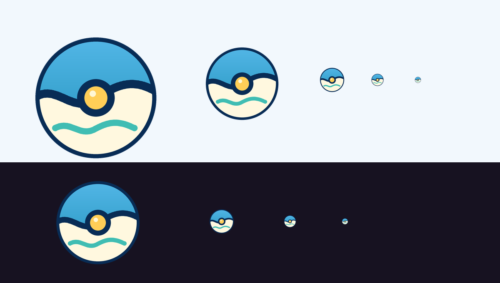
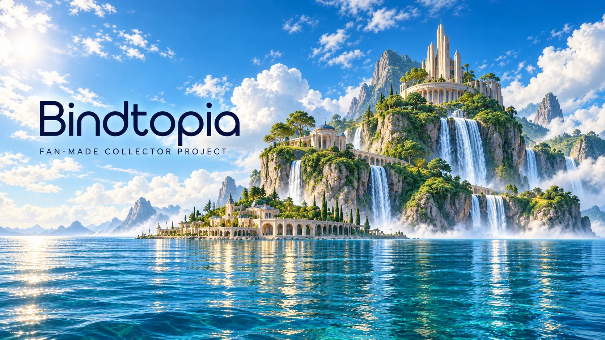

Bindtopia — merkbasis
Het zonnige eiland is de grote merkbanner bovenaan de portal. Voor navigatie, kleinere toepassingen en vertalingen is er ook een losse, bewerkbare typografische variant.
1. Bindtopia-logo en favicon
Een eigen oceaanbol met een gouden zon en turquoise golf: herkenbaar als verzamelembleem en passend bij het eiland.
Los beeldmerk (SVG) · Licht logo (SVG) · Donker logo (SVG) · Favicon (ICO)



2. Cinematic merkbanner

3. Typografische variant
Bindtopia
FAN-MADE COLLECTOR PROJECT
Roboto is meegeleverd als fallback. Exact Flexo vereist de passende webfontbestanden en licentie.
4. Licht kleurenpalet
Diep oceaanblauw
#082C55 · merk en koppen
#082C55 · merk en koppen
Helder blauw
#0D65B5 · primaire acties
#0D65B5 · primaire acties
Zacht turquoise
#DCF0EE · labels en details
#DCF0EE · labels en details
Warm wit
#FFFEFA · oppervlakken
#FFFEFA · oppervlakken
Zacht zonlicht
#FFF2C9 · subtiele accenten
#FFF2C9 · subtiele accenten
Kaarten worden als volledige originele afbeeldingen boven het eiland gepositioneerd. Ze zijn geen onderdeel van de gegenereerde achtergrond. De fan-made-vermelding blijft zichtbaar.